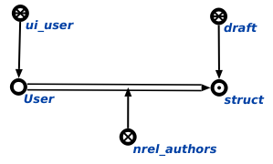

Задачей агента добавления нового черновика является добавление нового черновика. Данный агент инициируется при условии появления в памяти вопросной конструкции, соответствующей действию. добавить новый черновик. На вход данному агенту подается пользователь. Возможные результаты работы агента:
- Если на вход агенту пришел не знак пользователя, то генерируется сообщение об ошибке (Wrong parameter! It must be user sign(element of ui_user)).
- В случае успешного выполнения агента формируется конструкция, являющаяся новым черновиком для данного пользователя. Пример результата работы агента представлен на рисунке.
